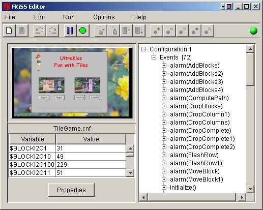

Welcome to the UltraKiss FKiSS Editor documentation. To open an online book, choose a book from the Contents page in the upper left of the Help Viewer. Click the book icon to expand the book topics. Then, click a topic to view it.
The FKiSS Editor is a full featured visual debugger tool designed to trace FKiSS command execution and provide visual feedback on the code execution results. The FKiSS Editor supports dynamic command breakpoints on selected FKiSS commands and single step tracing through the code. In addition, the FKiSS Editor enables dynamic adjustment of variable values or dynamic editing of all FKiSS event code. This online Help document provides reference material for the various commands and options available within the FKiSS Editor program.
The FKiSS Editor is both a visual debugger and a code writer. It is invoked from either the Tools menu on the main UltraKiss screen or whenever the Edit Event button is pressed from any of the property dialogs. If you invoke the editor manually in this way you can see your FKiSS event code, edit this code, set or clear breakpoints, or even set a pause state that will cause the program to interrupt as soon as the next FKiSS command is executed.
The FKiSS Editor screen has three parts as shown in Figure 1. The upper left is a small preview image of the main UltraKiss playfield. You can select any area of this image for magnification by dragging a selection box. If you right click on the image it will return to its original size. This window will show all visual changes for action commands that update the visual display. You can watch the visual effects of your statements as you step through the code and debug your logic.

The lower left of the FKiSS Editor screen contains is a list of all variables currently defined. You can scroll through these variables and change the value of any variable by selecting the value entry and typing a new value. The new value is written when the Enter key is pressed. The variable list tracks all current variable values as you step through the code. The variables are sorted by ascending name. You can invert the sort order by clicking on the table column headings.
The right half of the FKiSS Editor screen shows all the FKiSS events in a tree. Each event node, if expanded, shows all actions for the event. You can set a breakpoint on any event or action. Breakpoints are set through the menu commands or toolbar buttons, or by right clicking while over a line. Note that breakpoints can be set with right clicks any time an event tree is on display, as may be seen in the various property dialogs. A breakpointed line is always shown in red. The FKiSS Editor will also display current variable values in a tool tip pop-up display if you hold the cursor over any line that uses variables. This is very useful.
The running state of your configuration is shown with the indicator at the right of the toolbar. Green means the configuration is running and events are being processed. Red means the event handler is suspended. Yellow means that the configuration is running, but will interrupt or break at the first action command it has to process.
The event handler interrupts whenever it tries to process a command that is flagged to breakpoint. The window title will start with "Breakpoint" and the event display will open to the interrupted statement, as shown in Figure 2. For example, if you have invoked the FKiSS Editor manually and you have a green indicator showing the configuration is running, and you set a breakpoint in an event that is being repetitively processed in a timer loop, the interrupt will occur almost immediately, the indicator will turn red, and you are now in breakpoint mode.
If you are in breakpoint mode and tracing an event, you can single step through the code (F3), step into the code (F4), run to a selected statement (F5), or run to the end of the event (F6). Whenever you are tracing commands the current line will be shown in blue. Note that execution is interrupted 'before' any breakpoint statement is executed so variable values show the before state. If you single step through the code the statement is executed in its entirety and the current line will move to the next line. If you want to look at the 'after' values for the variables once the statement is executed, check the variable list or hold your cursor over the just executed line to see the tool tip pop-up.
If you want to trace into the code and drill down into gosub() routines or timer executions you use the 'step into' command. For gosub() commands the editor will break at the first line of the called routine. For timer commands, an interim breakpoint will be set on the alarm, the current traced event will run to completion, and the FKiSS Editor will open as soon as the breakpointed alarm is fired. Sequential changes through goto() statements are automatically traced through single stepping.
If you want to trace initialize() or begin() events, you will have to open the data set as per usual, invoke the FKiSS Editor and set a breakpoint on the initialize() or begin() event, and then restart the configuration. The breakpoint will occur on the restart. Note that event or action breakpoints are retained across any restart that loads from memory and does not require a re-parse of the configuration.
You can also edit the event code for any selected event. The File-Edit Event command will open a text editor window. This window will show the selected event code and all associated comment text as will appear in the configuration file if the configuration is saved. You can change the code as you wish and on exit from the text editor apply the new code to the configuration. This new code will be executed whenever program execution is resumed.
Edited FKiSS code is syntax checked before being applied to the configuration. If a syntax error exists the text editor will be re-invoked and you will be able to correct the problem.
The FKiSS Editor supports full undo and redo recovery for all FKiSS event editing and variable changes. You can undo or redo changes as required providing that the FKiSS Editor is not closed. Once the editor is terminated changes can no longer be undone.
Next Document: Menu Commands
Copyright (c) 2002-2023 William Miles